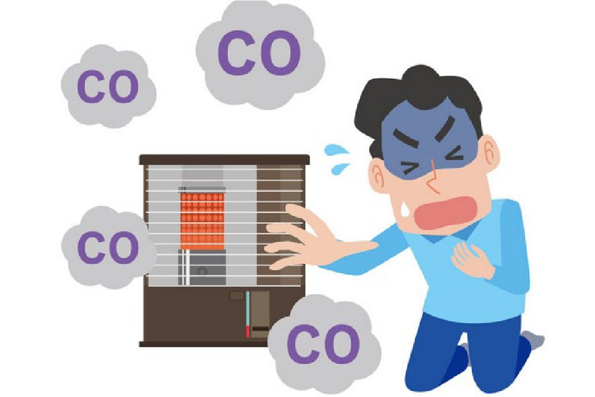
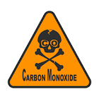
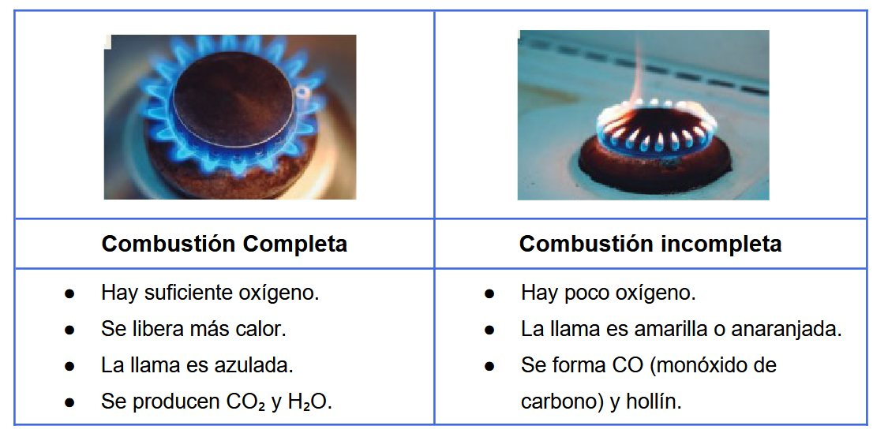

Estar más prevenidos ante el gas inodoro e incoloro es el primer paso para cuidar de nuestra salud y bienestar. A continuación, daremos a conocer información importante sobre la prevención del monóxido de carbono.

Un enemigo invisible
El monóxido de carbono es un enemigo invisible, ya que no tiene olor, no tiene sabor ni color. Las personas que se calefaccionan con hornos y hornallas, calefactores y estufas están más propensas a inhalar monóxido de carbono y podrían estar en peligro.

Síntomas por el monóxido
Dolor de cabeza, mareos, náuseas, debilidad y visión borrosa.
Precauciones que debes tomar
No calefaccionarse con hornos u hornallas, limpiar el calefactor cada un año, tener la rejilla ventilada y no usar estufas en espacios cerrados. En el caso de que estés en esa situación, debes abrir ventanas y puertas, salir afuera, apagar los artefactos y llamar a emergencias.

Estar atentos ante el monóxido de carbono no es vivir asustados, sino cuidar mejor nuestra vida cada día. Estar informados e informar a otras personas hace que todos vivamos tranquilos y seguros: nos ayudamos entre todos.